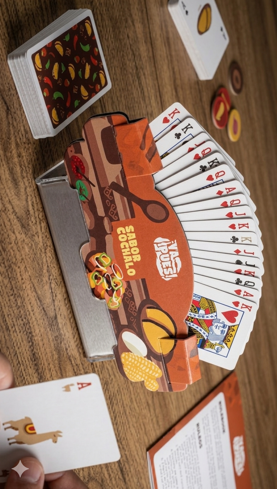
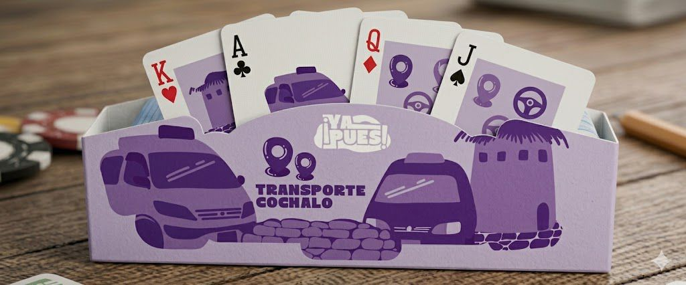
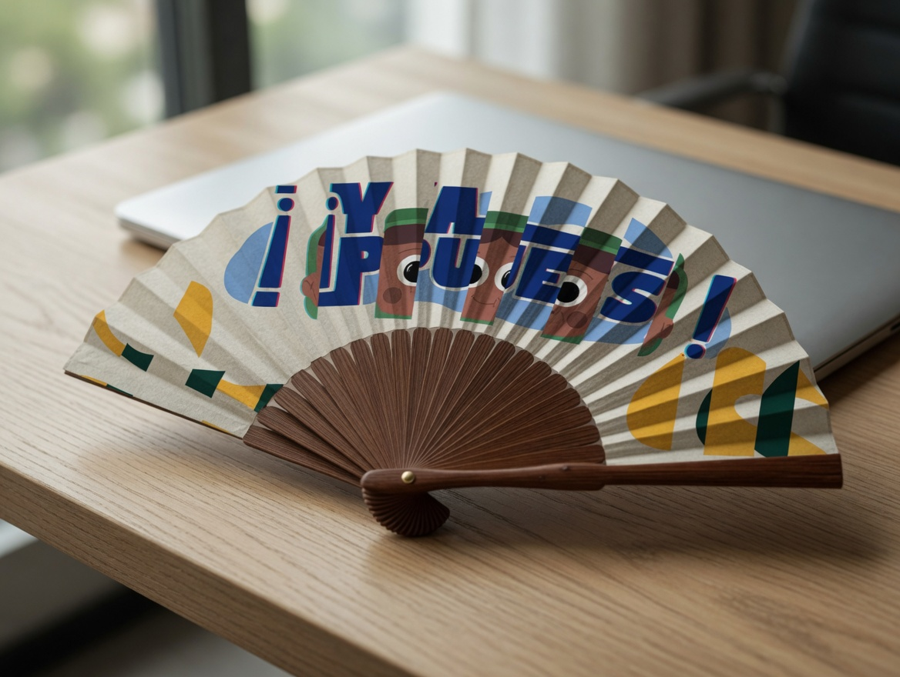
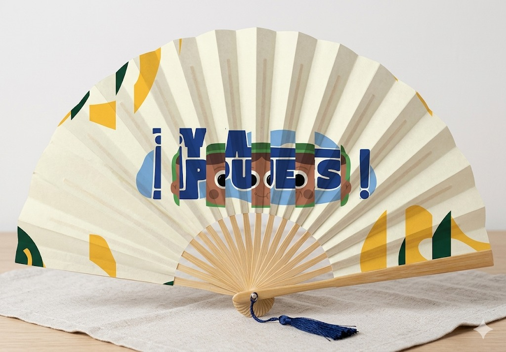
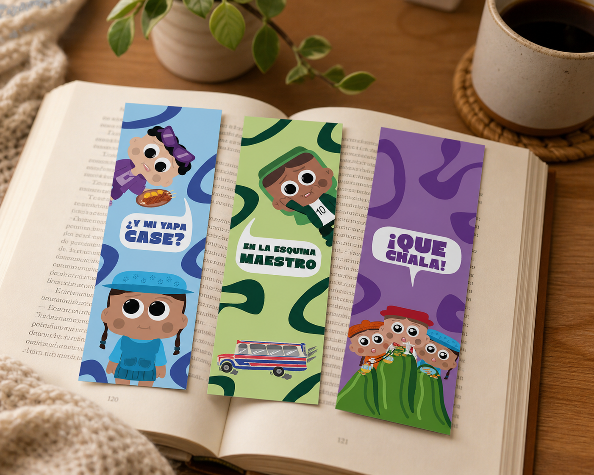
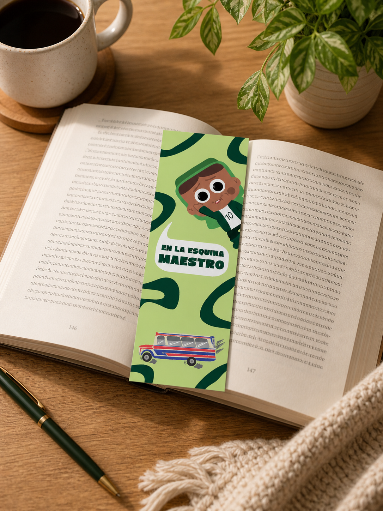
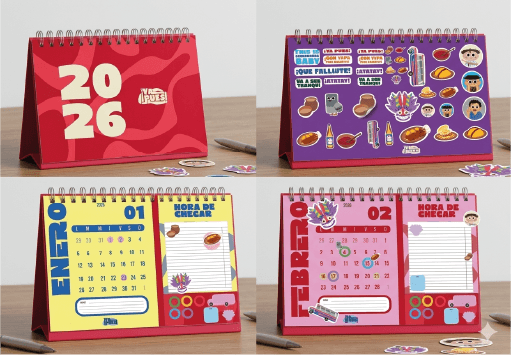
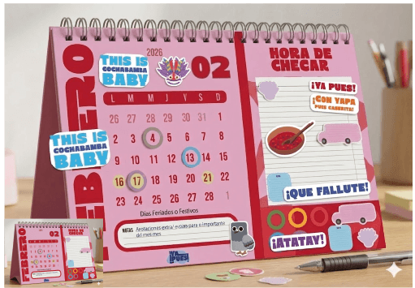

Portanaipes
Organizan las cartas del juego por categorías y hacen que la mesa se vea más dinámica.
Productos gráficos que amplían el universo visual de “¡Ya Pues!”: piezas útiles, coleccionables y coherentes con la identidad cochabambina.

Organizan las cartas del juego por categorías y hacen que la mesa se vea más dinámica.

Variantes visuales para comidas, lugares, extras y situaciones.

Producto físico con el logo y la estética de ondas del proyecto.

Aplica la identidad visual a un objeto cotidiano y coleccionable.

Pequeñas piezas gráficas con personajes y colores del juego.

Extienden el sistema visual a productos editoriales.

Incluye stickers y referencias a la vida cotidiana de Cochabamba.

Refuerzan la interacción y el vínculo con la identidad del juego.
Estos productos acompañan la experiencia del juego físico y ayudan a que la marca “¡Ya Pues!” se sienta completa: editorial, funcional, cultural y reconocible.
Volver al inicio